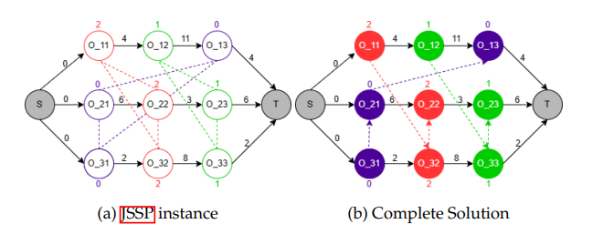
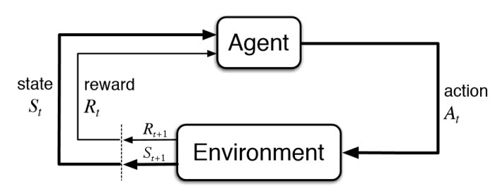
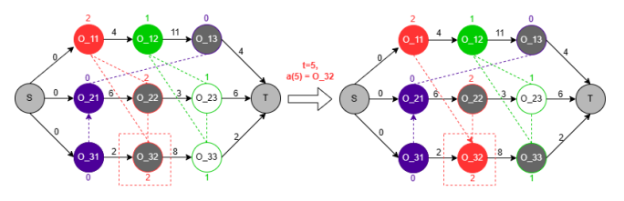
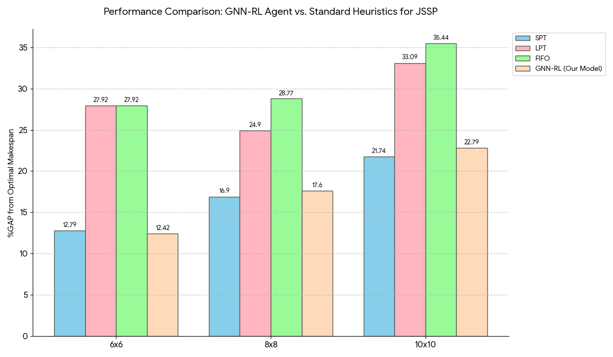

Master's Thesis: Intelligent Job Scheduling with GNN-RL
Developing an efficient solution for the complex Job-Shop Scheduling Problem using Graph Neural Networks and Reinforcement Learning.

Imagine a bustling factory where machines hum, workers hustle, and orders pile up. The challenge? Scheduling tasks so everything runs smoothly, products are delivered on time, and costs stay low. This is the Job-Shop Scheduling Problem (JSSP), a puzzle that’s been a headache for industries like manufacturing, logistics, and even computer networking. With modern demands for customized products and smaller batch sizes, finding an efficient schedule is tougher than ever.
In my Master’s thesis at TH OWL, I tackled this problem using a cutting-edge combo: Graph Neural Networks (GNN) and Reinforcement Learning (RL). My goal was to create an intelligent system that learns to schedule tasks optimally, reducing the total time (or makespan) needed to complete all jobs. This page takes you through my journey—why JSSP matters, how I built my solution, and what I learned along the way.
Core Technologies Utilized


What is Job-Shop Scheduling?
Picture a busy restaurant kitchen during dinner rush. Each chef (machine) can only handle one dish (task) at a time, and each dish has steps (operations) that must be done in order—say, chopping veggies before cooking. The goal is to finish all dishes as quickly as possible. That’s JSSP in a nutshell.
Formally, JSSP involves scheduling jobs (sets of tasks) on machines to minimize the total time taken (makespan). Each job has a sequence of operations, each requiring a specific machine for a fixed time, and machines can’t multitask. It’s a notoriously tough problem (NP-hard, for the nerds out there), meaning finding the perfect schedule is computationally intense.
To model JSSP, we use a disjunctive graph, where nodes represent tasks (operations), and edges show dependencies (conjunctive arcs for task sequences within a job) or conflicts (disjunctive arcs for tasks needing the same machine). Solving JSSP is equivalent to finding an orientation for all disjunctive arcs such that the resulting graph is a Directed Acyclic Graph (DAG) representing a feasible schedule.
The Approach: AI for Intelligent Scheduling
Traditional methods for JSSP, like exact algorithms or simple rules (heuristics) such as Shortest Processing Time (SPT), have limitations. Exact methods can be too slow for large, complex problems, and heuristics don't always find the globally optimal solution. This is where Artificial Intelligence (AI), particularly the combination of Reinforcement Learning (RL) and Graph Neural Networks (GNNs), offers a promising alternative.

Reinforcement Learning (RL) is akin to training an intelligent agent to make a sequence of decisions. The agent learns by interacting with an environment (in this case, the JSSP), taking actions (e.g., scheduling a specific task), and receiving feedback in the form of rewards or penalties. The goal is to develop a policy—a strategy for choosing actions—that maximizes the cumulative reward, which, for JSSP, is tied to minimizing the makespan.
Graph Neural Networks (GNNs) are a class of neural networks specifically designed to operate on graph-structured data. This makes them exceptionally well-suited for JSSP, which can be naturally represented as a disjunctive graph. GNNs can process the complex relationships within this graph—task dependencies, machine constraints, and processing times—to generate rich, informative embeddings (vector representations) of the tasks and the overall system state.
Together, GNNs and RL form a powerful synergy for tackling JSSP. The GNN acts as a sophisticated feature extractor, capturing the intricate structure and current state of the scheduling problem from the disjunctive graph. These learned representations are then fed to the RL agent, enabling it to make more informed decisions and learn effective scheduling policies through iterative interaction and feedback. This combined approach moves beyond predefined rules, allowing the system to discover complex strategies for optimizing job schedules.
Methodology: Building the GNN-RL Solution
The core of this thesis was to develop an intelligent agent capable of learning to solve the Job-Shop Scheduling Problem (JSSP) by combining Graph Neural Networks (GNNs) with Reinforcement Learning (RL). Here’s a breakdown of the approach:
1. Environment Setup: The JSSP as a Markov Decision Process (MDP)

To apply RL, the JSSP was formulated as a Markov Decision Process (MDP):
- State (St): The state at any time step t is primarily represented by the current disjunctive graph G(t). This includes the graph embedding, along with features for each operation such as its machine ID, processing time (pi,j), current lower bound (finish time if scheduled), and status (scheduled or not). An action mask is also part of the observation to denote valid actions.
- Action (At): The agent selects an operation to be scheduled next from the set of available operations.
- Reward (rt+1): The reward function was designed to guide the agent towards minimizing the makespan. It incorporates penalties for exceeding a predefined makespan horizon and bonuses for efficient scheduling relative to optimal known values.
- Done Signal: An episode concludes when all operations are scheduled, or if the current schedule's makespan exceeds the defined horizon.
2. Reinforcement Learning Algorithm: Proximal Policy Optimization (PPO)
I employed the Proximal Policy Optimization (PPO) algorithm, a state-of-the-art policy gradient method known for its stability and reliable performance in complex environments. PPO works by iteratively collecting experience from the environment and then updating the agent's policy (its decision-making strategy). It uses a clipped surrogate objective function to ensure that policy updates do not deviate too drastically from the previous policy, promoting stable learning. The architecture involved separate neural network models for the policy (actor) and value function (critic).
3. GNN Integration for State Representation
A Graph Neural Network (GNN) was utilized to process the disjunctive graph representation of the JSSP instance. The GNN learns to create meaningful node embeddings (vector representations) for each operation by aggregating information from its neighbors in the graph. These embeddings, which capture the structural properties and dependencies of the JSSP, are concatenated with other operational features (like processing time and machine ID) to form the comprehensive state vector fed to the PPO agent.
4. Technical Stack and Training Infrastructure
The solution was developed in Python (version 3.8.12). Key libraries and frameworks included:
- OpenAI Gym (version 0.23.1): For creating and managing the custom JSSP environment.
- NetworkX (version 2.8.8): For constructing and manipulating the disjunctive graph representations of JSSP instances.
- Ray RLlib (version 2.1.0) with PyTorch (version 1.13.0): For implementing the PPO algorithm and the underlying neural network models (GNN, policy, and value networks).
- NumPy, Matplotlib, Pandas, Seaborn, Plotly: For data handling, analysis, and visualization.
The RL agent was trained on an AWS EC2 instance (C5a.8xlarge), leveraging 32 parallel workers to accelerate the training process across numerous JSSP instances.
Experiments and Results
The GNN-RL model was rigorously tested on standard Job-Shop Scheduling Problem (JSSP) instances, primarily using Taillard's benchmarks, to evaluate its performance and compare it against established heuristics.
Experimental Setup
The experimental design focused on the following aspects:
- JSSP Instances: Standard instances of sizes 6x6, 8x8, and 10x10 were generated using Taillard's method.
- Action Modes: Two primary action modes for the RL agent were investigated:
- Task Mode: The agent selects individual tasks/operations to schedule, resulting in a larger action space ($|\mathcal{A}_t|=|\mathcal{O}|$).
- Job Mode: The agent selects a job, and the environment then identifies the next valid task for that job, leading to a smaller action space ($|\mathcal{A}_t|=|\mathcal{J}|$).
- Reward Horizon: Experiments were conducted with and without a "horizon" in the reward function. The horizon setup penalized schedules that exceeded a predefined makespan limit (optimal makespan + 10 time units), encouraging more conservative exploration.
- Training Specifications: The model was trained for 1000 iterations, with each iteration comprising 4320 environment steps, totaling approximately 4.32 million environment steps. Training utilized 30 parallel actors on an AWS EC2 (C5a.8xlarge) instance. Key PPO hyperparameters included a learning rate of 1x10-5 and a discount factor ($\gamma$) of 0.99.
- Evaluation Metrics: Performance was evaluated on 100 different instances by measuring the average makespan (CmaxAvg) and the percentage GAP (%GAP) from the optimal makespan obtained using Google OR-Tools.
Key Results and Performance
The GNN-RL agent demonstrated promising results, particularly when compared to common dispatching heuristics:

- Comparison with Heuristics:
- For 6x6 instances, the GNN-RL model (Task mode, with horizon) achieved a %GAP of 12.42%, outperforming Shortest Processing Time (SPT) (12.79% GAP), Longest Processing Time (LPT) (27.92% GAP), and First In First Out (FIFO) (27.92% GAP).
- For larger 8x8 and 10x10 instances, the model performed better than LPT and FIFO but was slightly outperformed by SPT. For 10x10 instances, our model had a 22.79% GAP compared to SPT's 21.74% GAP.
- Impact of Action Mode:
- The 'Task Mode' generally performed better than the 'Job Mode'. For 6x6 instances, Task Mode achieved a 12.42% GAP, while Job Mode resulted in an 18.72% GAP. This suggests that allowing the agent to select specific operations, despite the larger action space, led to more refined scheduling decisions.
- Effect of Reward Horizon:
- Employing a 'horizon' in the reward function (penalizing excessively long makespans) significantly improved performance. For 6x6 instances, the model with a horizon achieved a 12.42% GAP, compared to 19.79% GAP without a horizon. This guided the agent towards more practical and efficient solutions.
These results indicate that the GNN-RL approach is a viable method for JSSP, demonstrating competitive performance against established heuristics, especially for smaller to moderately sized problems. The choice of action mode and reward structure also plays a crucial role in the agent's learning efficacy.
Challenges and Lessons Learned
This research journey, while rewarding, was not without its hurdles. Training the GNN-RL agent, particularly for larger JSSP instances (like 8x8 and 10x10), proved to be computationally intensive, demanding significant resources. Due to time and computational constraints, deeper exploration into more advanced GNN architectures, such as those incorporating attention mechanisms, or delving into meta-learning approaches for broader generalization across different instance sizes, was limited.
The model demonstrated strong performance on smaller instances but showed challenges in generalizing effectively to larger, more complex scenarios without further architectural enhancements. One key observation was that while the current GNN effectively captured spatial dependencies, incorporating elements like LSTMs could potentially improve temporal understanding and generalization across varying problem scales.
On a personal level, this project was a profound learning experience. It underscored the delicate balance required in RL between exploration (allowing the agent to discover new strategies) and exploitation (leveraging known good strategies). Witnessing the agent progressively learn and refine its scheduling policies over millions of training steps was genuinely exciting. Conversely, debugging the intricacies of graph embeddings and ensuring the stability of the learning process presented its own set of challenges. Ultimately, the project reinforced my appreciation for the power of combining domain-specific knowledge—like the structured disjunctive graph representation of JSSP—with the adaptive learning capabilities of AI.
Conclusion: Impact and Future Outlook
This Master's Thesis successfully demonstrated that a Graph Neural Network (GNN) based Reinforcement Learning (RL) agent can effectively tackle the complex Job-Shop Scheduling Problem (JSSP). The developed learning mechanism, utilizing Proximal Policy Optimization (PPO) and a disjunctive graph representation, showed competitive performance against well-known heuristics, particularly for small to medium-sized JSSP instances. The key achievement was an agent that could learn scheduling policies by interpreting the structural information of the JSSP, aiming to minimize the overall makespan.
The results underscore the potential of applying advanced AI techniques to real-world industrial optimization challenges. By learning from the inherent structure of the problem, the GNN-RL agent offers a flexible and adaptive alternative to traditional scheduling methods. This approach not only holds promise for enhancing efficiency in manufacturing but also has broader implications for optimizing processes in logistics, computer networking, and other domains requiring sophisticated scheduling solutions.
Future work could explore more advanced GNN architectures, incorporate attention mechanisms, or investigate meta-learning techniques to improve generalization across a wider range of problem sizes and complexities. Integrating memory elements like LSTMs could also enhance the agent's ability to handle larger instances. The continued exploration of AI-driven scheduling promises a future where intelligent systems play a pivotal role in creating highly efficient and adaptive operational environments.
References and Further Reading
For those interested in delving deeper into the concepts discussed in this thesis, the following resources are highly recommended:
- Zhang, C., Song, W., Cao, Z., Zhang, J., Tan, P. S., & Chi, X. (2020). Learning to Dispatch for Job Shop Scheduling via Deep Reinforcement Learning. In H. Larochelle, M. Ranzato, R. Hadsell, M.F. Balcan, & H. Lin (Eds.), Advances in Neural Information Processing Systems, 33 (NeurIPS 2020), 1621-1632.
- Schulman, J., Wolski, F., Dhariwal, P., Radford, A., & Klimov, O. (2017). Proximal Policy Optimization Algorithms. arXiv preprint arXiv:1707.06347. [arXiv:1707.06347]
- Sutton, R. S., & Barto, A. G. (2018). Reinforcement Learning: An Introduction. MIT Press.
- Your Thesis: Bulchandani, S. P. (2023). Intelligent Job Scheduling using GNN-RL (Master's Thesis). TH OWL University of Applied Sciences and Arts, Lemgo, Germany.
- For a general overview of Graph Neural Networks, articles on platforms like Towards Data Science or Distill.pub can be very insightful.
"Research is to see what everybody else has seen and to think what nobody else has thought."